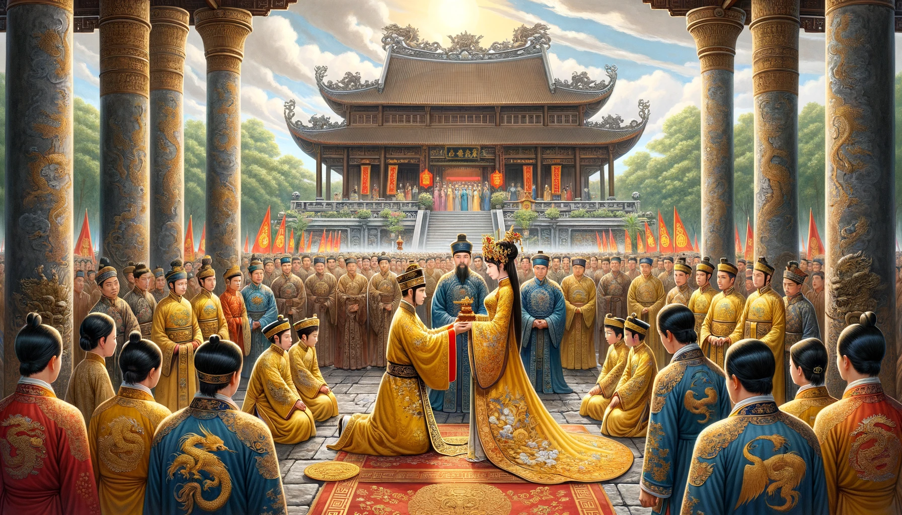

Chương 3: Liệu Có Bình Yên
“Vào năm Ất Dậu - 1255, Lý Chiêu Hoàng, nữ hoàng cuối cùng của nhà Lý, đã nhường ngôi cho Trần Quan Gia. Đó là một sự kiện trọng đại trong lịch sử nước ta,” với bộ râu trắng liên tục phe phẩy, ông Đồ Tâm kể chuyện thật lôi cuốn và đầy cảm xúc vào những đêm hội làng. Ông mặc một bộ trang phục màu nâu đậm làm bằng vải lanh, quần cùng màu với áo nhưng ống hơi rộng so với thân hình gầy gò. Đầu ông đội khăn vấn gọn gàng che đi mái tóc bạc trắng, dáng vẻ lụ khụ, tay lúc nào cũng mang theo cây gậy chống vừa trợ giúp đi lại vừa tạo nên sự trang trọng cho kinh nghiệm sống qua nhiều năm của ông. Ông Đồ Tâm, người đã sống qua nhiều thăng trầm của đất nước, là một người chất phác mộc mạc của làng Hạ Bì. Hữu Thế ngồi lẫn trong đám đông, lắng nghe từng lời kể của ông Đồ Tâm. Hiện tại đang là năm Bính Tuất - 1256, và Hữu Thế đang ở tuổi 14.
Ông tiếp tục kể: ”Cung điện Thăng Long vào buổi sớm mai thật rực rỡ và uy nghiêm. Ánh mặt trời len lỏi qua từng kẽ lá, chiếu sáng các hoa văn tinh xảo trên những cột trụ khắc hình rồng phượng. Sân Rồng rộng lớn, lát gạch đỏ rực rỡ, như một tấm thảm lộng lẫy trải dài. Những chiếc đèn lồng được treo khắp nơi, ánh sáng lung linh phản chiếu lên những bộ giáp sắt của binh lính đứng canh gác, tạo nên một bức tranh đầy sắc màu và hùng tráng. Không khí buổi lễ thật trang nghiêm và tĩnh lặng. Mọi người đều giữ im lặng, tỏ rõ sự tôn kính đối với giây phút lịch sử này. Tiếng chim hót xa xa như những âm thanh dịu dàng điểm tô thêm cho khung cảnh trang trọng. Những lá cờ rực rỡ bay phấp phới trong gió, biểu tượng của sự thịnh vượng và quyền uy.
Chiêu Thánh Hoàng Hậu, với vẻ đẹp dịu dàng nhưng đầy uy quyền, bước lên bệ rồng cao được chạm khắc tinh xảo. Bộ long bào màu vàng thêu rồng phượng của bà lấp lánh dưới ánh nắng, mỗi bước chân của bà nhẹ nhàng nhưng đầy quyền lực. Mái tóc đen dài của bà được búi gọn gàng, khuôn mặt trang nghiêm nhưng không giấu nổi nỗi buồn của sự chia ly.Bà cẩn thận tháo chiếc ấn ngọc, biểu tượng của quyền lực hoàng gia, đôi tay bà khẽ run lên một chút, như thể đang mang trong mình cả trọng trách nặng nề của quốc gia. Chiếc ấn ngọc lấp lánh, phản chiếu ánh sáng mặt trời, như một viên ngọc quý hiếm, biểu tượng cho quyền lực tối thượng.Trần Quan Gia, người đứng đối diện trong bộ áo bào vàng nhạt, thể hiện sự kiên định và lòng trung thành. Dù còn rất trẻ, nhưng ánh mắt của ông đã toát lên sự quyết tâm và chí lớn. Ông quỳ xuống nhận chiếc ấn ngọc từ tay Chiêu Thánh Hoàng Hậu, đôi mắt sáng rực với niềm tin và hy vọng cho tương lai của Đại Việt.
Binh lính canh gác xung quanh, tạo nên không khí trang nghiêm và an ninh chặt chẽ. Tiếng kèn lệnh vang lên, âm thanh mạnh mẽ vang vọng khắp không gian, như một lời tuyên bố hùng hồn về sự chuyển giao quyền lực. Những lá cờ đỏ thắm bay cao, biểu tượng cho sự chuyển mình của triều đại mới. Buổi lễ kết thúc, đánh dấu sự chuyển giao quyền lực, mở ra một trang sử mới cho nhà Trần và đất nước Đại Việt. Không khí trang nghiêm, từng chi tiết của buổi lễ đều được thực hiện một cách cẩn trọng, tỉ mỉ, thể hiện sự tôn trọng và quan trọng của sự kiện này.
Quan lại triều đình, dù có người lo lắng, có người hào hứng, đều giữ thái độ kính cẩn. Những ánh mắt chứa đựng nhiều cảm xúc: có sự kính phục, có sự kỳ vọng, và cả những lo âu về tương lai của đất nước dưới triều đại mới. Những ánh mắt chăm chú dõi theo từng cử chỉ, từng động tác của các nhân vật chính trong buổi lễ, như muốn khắc ghi lại giây phút trọng đại này trong tâm trí."
Khi câu chuyện tiếp diễn, Thế cảm thấy ông Đồ Tâm dường như kể luyên thuyên, khiến cậu mất tập trung. Cậu cố gắng giữ sự chú ý nhưng những chi tiết cao siêu về triều đình và chính trị không thể nào thu hút được một cậu bé tuổi mười bốn. Bên cạnh, Minh đã bắt đầu ngáp dài, đầu gật gù buồn ngủ vì những câu chuyện này chẳng thể gây một chút hứng thú nào cả. Ở tuổi này, Minh chỉ nghĩ đến những trò chơi ngày mai và những món ăn hấp dẫn.
Ông Hưng, ngồi bên cạnh, lại pha trò: "Thế mới nói, chỉ cần mặc áo long bào là thành vua. Từ đó đến nay, ta không dám mặc áo đẹp, sợ bị bắt làm vua mất!"
Mọi người cười rộ lên, tiếng cười vang dội, xua tan bầu không khí nghiêm trọng. Bỗng một đứa trẻ trong đám đông hỏi: "Ông ơi, tại sao phải nhường ngôi vậy ạ?". Ông Đồ Tâm mỉm cười, gật đầu trầm ngâm một lúc rồi đáp: "À, đó là một quyết định chiến lược để giữ gìn hòa bình và củng cố quyền lực của triều đình. Nhưng chắc cũng có những âm mưu và sức ép đằng sau đó."
Một người già trong làng hỏi tiếp, giọng trầm ngâm: "Có bị bức ép nhường không, ông Đồ?". Ông Đồ gật đầu, đôi mắt như nhìn xa xăm vào quá khứ: "Có thể nói là có. Thái sư Trần Thủ Độ, người quyền lực nhất triều đình lúc đó, đã sắp xếp cuộc hôn nhân giữa Chiêu Thánh Hoàng Hậu và cháu họ của ông. Việc nhường ngôi có khả năng cao không chỉ là ngẫu nhiên, mà là một kế hoạch được tính toán kỹ lưỡng."
Một cô bé hỏi tiếp, giọng ngây thơ: "Quan gia mới có giúp dân làng mình sống tốt hơn không, ông?". Ông Đồ Tâm mỉm cười, đáp lời với sự chắc chắn: "Chắc chắn rồi. Các cải cách của Trần Quan Gia đã mang lại nhiều lợi ích cho người dân. Thuế khóa giảm, nông nghiệp phát triển, và cuộc sống của mọi người dần trở nên ấm no, hạnh phúc."
Ông Đồ Tâm ngâm nga một bài thơ ca ngợi Trần Quan Gia: "Quan gia nhân từ, giảm thuế nặng, Dân lành yên ấm, cuộc sống tăng. Lòng dân vui vẻ, đời thịnh vượng, Triều Trần vững mạnh, đất nước hằng."
Ông Đồ Tâm ngừng lại một chút, nhìn quanh đám đông và nói: "Làng Hạ Bì của chúng ta cũng không ngoại lệ. Nhờ những cải cách của Trần Quan Gia, cuộc sống của người dân trong làng ngày càng thịnh vượng. Chúng ta có thể thấy được điều đó qua những cánh đồng lúa bát ngát, những con sông đầy cá và những nụ cười rạng rỡ trên khuôn mặt mọi người." Hữu Thế nhìn quanh, thấy mọi người đang mỉm cười và gật đầu đồng tình. Cậu cảm thấy tự hào về làng quê mình, nơi mà cuộc sống luôn bình yên và thịnh vượng. Nhưng câu chuyện chưa dừng lại ở đó.
Sáng hôm sau, ánh nắng ban mai nhẹ nhàng chiếu rọi khắp làng Hạ Bì, mang theo hơi sương mát lạnh của buổi sớm. Hữu Thế vừa tỉnh giấc, cảm thấy đôi mắt còn mơ màng, cơ thể vẫn còn lười biếng sau một đêm dài. Cậu đi ra giếng trước nhà, lấy gáo nước trong veo múc lên và bắt đầu rửa mặt. Nước mát lạnh làm cậu tỉnh táo dần. Trong lúc đó, Minh từ xa chạy lại, khuôn mặt lộ rõ vẻ lo lắng và bối rối. Minh, vốn là cậu bé vui tươi và hiếu động, nay lại hiện rõ nét căng thẳng, đôi mắt to tròn tràn ngập sự lo âu.
"Thế ơi! Thế ơi!" Minh gọi to, hơi thở gấp gáp vì chạy nhanh. "Lưới đánh cá của ba tao bị cắt rách hết rồi!"
Thế dừng lại, quay người nhìn Minh, đôi mắt còn đọng chút mơ màng của giấc ngủ nhưng giờ đã dần chuyển sang ngạc nhiên và lo lắng. Cậu vội vàng hỏi lại: "Cái gì? Lưới đánh cá bị cắt rách sao?". Nhớ lại những lời kể đêm qua của ông Đồ Tâm, Thế băn khoăn trong lòng: “Liệu có kẻ nào muốn phá hoại sự yên bình của làng chúng ta hay chỉ là sự cố”. Nhưng chưa kịp nghĩ thêm, Minh đã kéo Thế chạy đi vội vàng.
(P/S: Mình hứa là chap này sẽ rất hay vì là hành trình điều tra và phá án, nhưng mình đã tiếp thu ý kiến của 1 đọc giả nói rằng nên bố cục lại năm mà Thế đang sinh sống, nên mình mới viết chap này. Mình xin phép dời phần phá án sang chap sau và up lên sớm trong tối nay.)